Continue with your existing Android Studio project for this section.
Next, let's implement the user interface. We'll be following a similar approach as before. First we'll define the tests that verify how we expect the UI to behave, then the implementation follows from there.
The Android Testing Support Library contains the Espresso testing framework that provides APIs to simulate user interactions. Espresso has a very nice fluent, concise and readable Api to write functional UI tests and was built to make UI testing as frictionless as possible. This means that you can focus on writing tests without having to deal with unreliable and flaky tests.
Although there is support for running instrumentation tests in the Android framework, current development efforts are focused around the new AndroidJUnitRunner which is released as part of the Android Testing Support Library.
We have already set up the build dependencies for you, so there is no need to update our build configuration.
If you are adding Espresso to your own project you need to add the AndroidJUnitRunner and Espresso
framework from the Android Testing Support Library to your build.gradle:
// Android Testing Support Library's runner and rules
androidTestCompile "com.android.support.test:runner:$rootProject.ext.runnerVersion"
androidTestCompile "com.android.support.test:rules:$rootProject.ext.rulesVersion"
// Espresso UI Testing dependencies.
androidTestCompile "com.android.support.test.espresso:espresso-core:$rootProject.ext.espressoVersion"
androidTestCompile "com.android.support.test.espresso:espresso-contrib:$rootProject.ext.espressoVersion"
Unlike local unit tests, instrumentation tests must be placed in the androidTest source set (app/src/androidTest/java/...). Don't worry - we have already created the directory and files up for you.
Just to recap our project structure, we have three build variants for our app:
|
|
Uses the |
|
|
|
|
|
Signed |
The first test we are writing is using the prodDebug variant - make sure to select it for our test artifact before continuing. (Different tests and directories are activated based on the variant you have selected!)
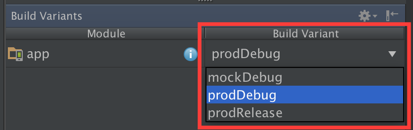
For this section of the codelab you will need a physical device or Android emulator, because we will be implementing the user interface.
Espresso can also perform user interactions (ViewActions) on a view, for example clicks and touches.
One of the key interactions in the app is clicking the floating action button to open the "add note" screen.
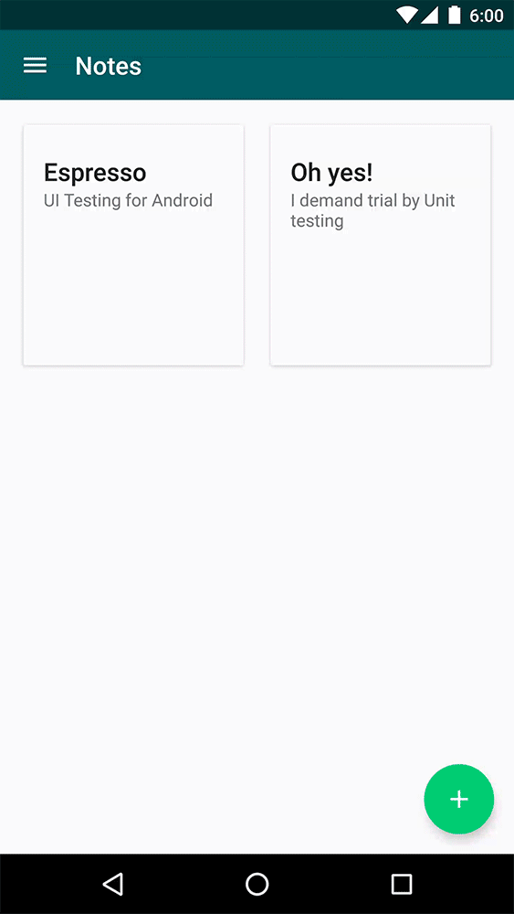
We will implement a test that opens the app, clicks that button and verifies that the correct screen is being displayed.
Edit the file app/src/androidTest/java/.../notes/NotesScreenTest.java and comment in the method
clickAddNoteButton_opensAddNoteUi() as you work through this section:
First, we need to find the floating action button in the view hierarchy (which we can identify by its ID R.id.fab_notes) and click it. Then we check that the "add note" screen has been shown, we can easily do this by checking
that the title of the screen (identified by its ID R.id.add_note_title) is being displayed:
@Test
public void clickAddNoteButton_opensAddNoteUi() throws Exception {
// Click on the add note button
onView(withId(R.id.fab_add_notes)).perform(click());
// Check if the add note screen is displayed
onView(withId(R.id.add_note_title)).check(matches(isDisplayed()));
}Note that we do not have to wait for the add note screen to be displayed. This is the power of Espresso - it automatically waits for the UI thread to be idle before running any further check. There is no need to implement these waits and delays yourself.
Now that we have written our first test, it's time to run it!
Right click on the class that where we have just implemented our test (androidTest/java/.../notes/NotesScreenTest.java) then select "Run NotesScreenTest ...". If you are not seeing this
option, make sure you have switched to the Android Instrumentation Tests Build Variant (see above).
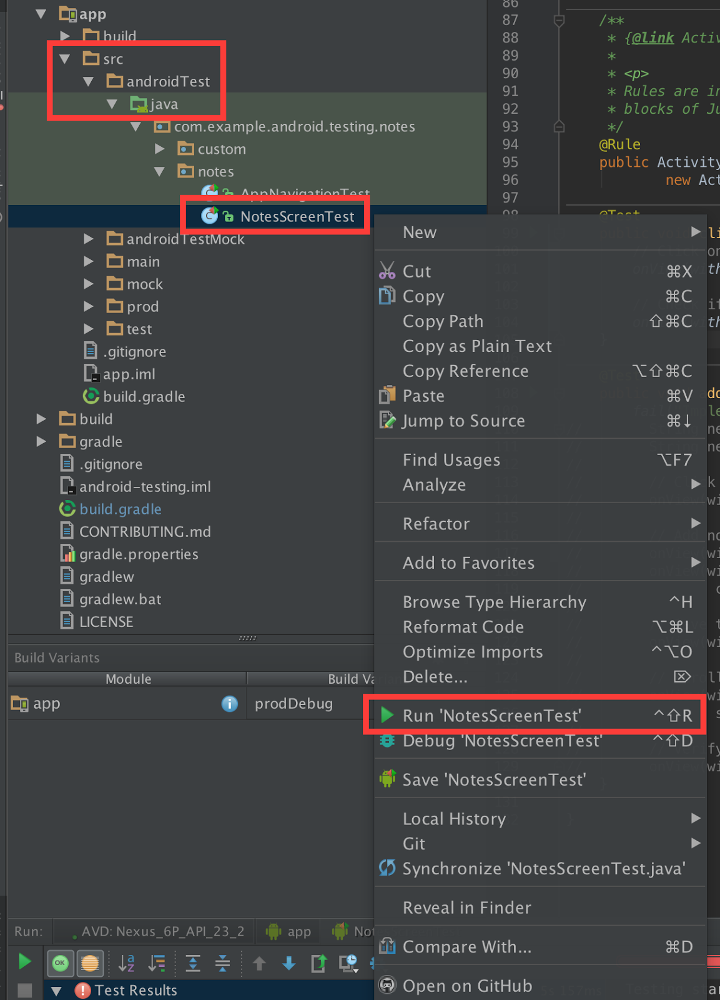
This approach works well if you are working on just a single test class, but doesn't scale if you want to run many different tests at the same time.
Let's set up a build configuration that will run all of our unit tests together
Fortunately, Android Studio makes this very easy! Just right click on the package name under androidTest/java/com.example.android.testing.notes and select "Create ‘Tests in com.exampl...'".
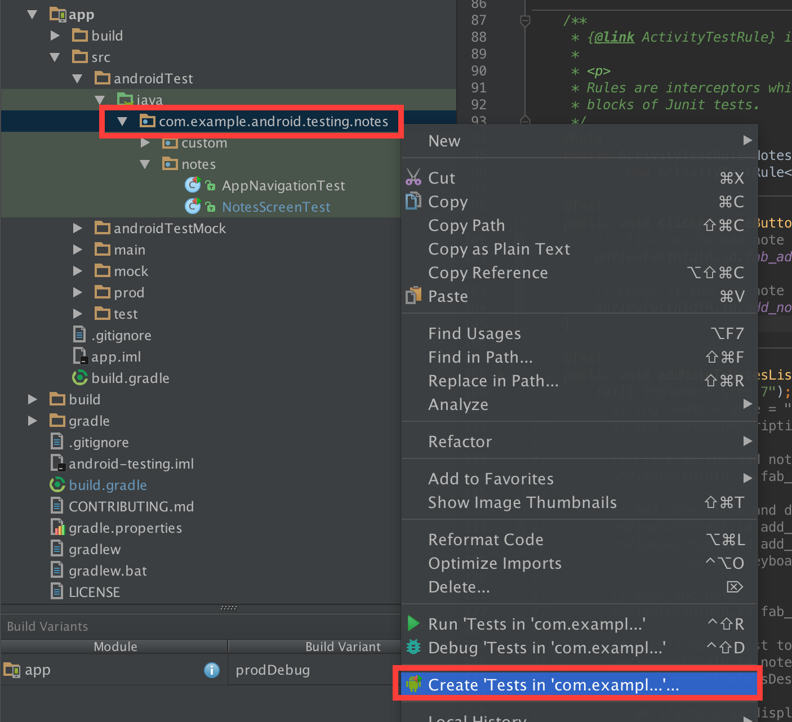
In the next dialog we can configure our new build configuration (such as excluding tests or selecting a target device), but for now the default options are just fine.
Select our new run configuration from the run configuration menu, then select run:
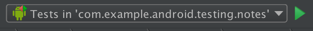
Keep an eye on your device - you can see Espresso execute our tests!
We will have a few failing tests for now - that's what we will be implementing in the rest of the codelab!
Their status is displayed in the Run Panel that opened at the bottom of the screen:
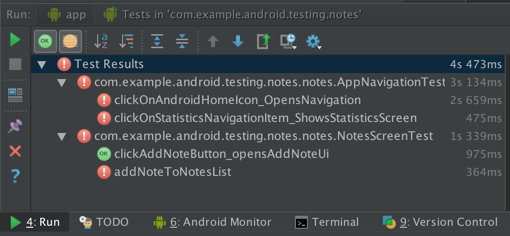
The Android Testing Support Library includes two JUnit Rules that make it easy to write functional tests for Android Activities and Services.
JUnit test rules allow the alteration of test methods. It is run before any test is executed and can be shared between projects and classes.
The ActivityTestRule is a rule that provides functional testing of a single Activity. The annotated Activity will be launched before each annotated @Test and before any annotated @Before methods. The
Activity is automatically terminated after the test is completed and all @After methods are finished.
Espresso tests are written based on what a user might do while interacting with your app. The key concepts are locating and interacting with UI elements. The first step is to find a View you are interested in, then check its state or interact with it.
ViewMatchers select Views in the current view hierarchy. The most common ones are withId(...) (that finds Views with a specific ID) and withText(...) (that finds Views with a specific text), but there are many others, including matchers for state (selected, focused, enabled), content description and hierarchy (root
and children), among others.
ViewActions are actions that can be performed on a View (for example click).
ViewAssertions are passed to the check(...) ViewAction to verify its state.
Continue editing the file app/src/androidTest/java/.../notes/NotesScreenTest.java and comment in the code as you work through this section:
Let's go ahead and implement our first Espresso test from scratch: addNoteToNotesList().
This test will open the ‘Add Note' screen, enter some text, click the save button and verify that the text has been displayed.
First, make sure that the test has been set up, remove the fail(...) call and add some test data we will be checking:
@Test
public void addNoteToNotesList() throws Exception {
String newNoteTitle = "Espresso";
String newNoteDescription = "UI testing for Android";
...
}Similar to the previous Espresso test we looked at, we will first find the floating action button (R.id.fab_add_notes) and click it:
// Click on the add note button
onView(withId(R.id.fab_add_notes)).perform(click());Next (once the "add note screen" is open) we will enter our note text and save the note. (We don't need to wait for the new screen to open - Espresso will do this automatically for us. It waits
until a View with the id R.id.fab_add_notes can be found.)
// Add note title and description
onView(withId(R.id.add_note_title)).perform(typeText(newNoteTitle), closeSoftKeyboard()); // Type new note title
onView(withId(R.id.add_note_description)).perform(typeText(newNoteDescription),
closeSoftKeyboard()); // Type new note description and close the keyboard
// Save the note
onView(withId(R.id.fab_add_notes)).perform(click());
Next we are back on the "Notes list screen". We will ask Espresso to scroll the RecyclerView until it can find a note in the list that contains our description and verify that it is in fact displayed on the screen:
// Scroll notes list to added note, by finding its description
onView(withId(R.id.notes_list)).perform(
scrollTo(hasDescendant(withText(newNoteDescription))));
// Verify note is displayed on screen
onView(withItemText(newNoteDescription)).check(matches(isDisplayed()));This is our final implementation of the addNoteToNotesList() test:
@Test
public void addNoteToNotesList() throws Exception {
String newNoteTitle = "Espresso";
String newNoteDescription = "UI testing for Android";
// Click on the add note button
onView(withId(R.id.fab_add_notes)).perform(click());
// Add note title and description
// Type new note title
onView(withId(R.id.add_note_title)).perform(typeText(newNoteTitle), closeSoftKeyboard());
onView(withId(R.id.add_note_description)).perform(typeText(newNoteDescription),
closeSoftKeyboard()); // Type new note description and close the keyboard
// Save the note
onView(withId(R.id.fab_add_notes)).perform(click());
// Scroll notes list to added note, by finding its description
onView(withId(R.id.notes_list)).perform(
scrollTo(hasDescendant(withText(newNoteDescription))));
// Verify note is displayed on screen
onView(withItemText(newNoteDescription)).check(matches(isDisplayed()));
}
Run all Espresso tests again.
Our test NotesScreenTest#addNoteToNotesList() is now no longer listed as failing:
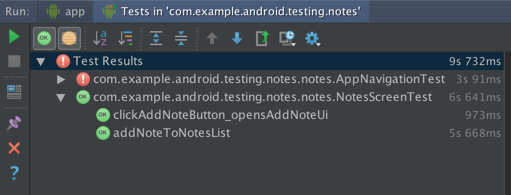
You can also toggle view to display all passed tests using the button .
In the previous step we implemented a test for the notes Presenter that verified that calling the ‘open a note' call told the View to display note details. Now we will implement an end-to-end UI test that verifies that clicking a note will display the correct note on screen.
We will start again by implementing the test and then implementing the UI in the View.
The test we are implementing now uses the mock source set to simulate a notes repository with a fake implementation. You need to switch your build variant to mockDebug to activate the correct tests. Our tests for the mockDebug variant live in app/src/andoidTestMock/....
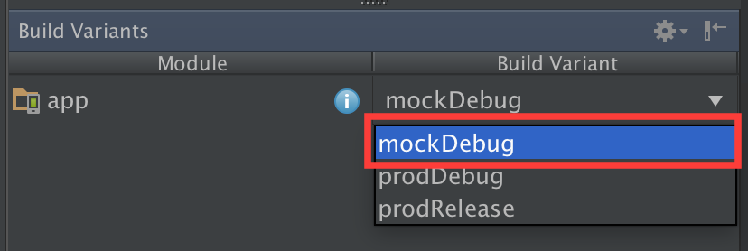
Edit the file app/src/androidTestMock/java/.../notedetail/NoteDetailScreenTest.java and comment in the method as you work through
this section:
Our test is for the NoteDetailActivity, we have already defined an
ActivityTestRule for that Activity. The additional parameters specify the touch mode and if
the Activity should be automatically launched before each @Test. We'll need to supply an extra parameter to the Activity via a custom Intent, so we will handle the launch ourselves.
@Rule
public ActivityTestRule<NoteDetailActivity> mNoteDetailActivityTestRule =
new ActivityTestRule<>(NoteDetailActivity.class, true /* Initial touch mode */,
false /* Lazily launch activity */);Next, we will set up a method annotated with @Before that accesses this rule to create the intent (with a supplied note ID that we wish to display) that will start the Activity. The ActivityTestRule handles the creation
and the lifecycle of the Activity during the test. This set up is essentially similar to the call to NoteDetailActivity.newInstance(...) with a Note ID.
We are using the FakeNotesServiceApiImpl to store
our notes and we have added one single note to our repository. Comment in the set up steps in intentWithStubbedNoteId():
@Before
public void intentWithStubbedNoteId() {
// Add a note stub to the fake service api layer.
FakeNotesServiceApiImpl.addNotes(NOTE);
// Lazily start the Activity from the ActivityTestRule this time to inject the start Intent
Intent startIntent = new Intent();
startIntent.putExtra(NoteDetailActivity.EXTRA_NOTE_ID, NOTE.getId());
mNoteDetailActivityTestRule.launchActivity(startIntent);
registerIdlingResource();
}Implement the test noteDetails_DisplayedInUi() that verifies that the title, description and image match what we have just added. (Remember, the @Before method starts the NoteDetailActivity to the note
we have just added.)
@Test
public void noteDetails_DisplayedInUi() throws Exception {
// Check that the note title, description and image are displayed
onView(withId(R.id.note_detail_title)).check(matches(withText(NOTE_TITLE)));
onView(withId(R.id.note_detail_description)).check(matches(withText(NOTE_DESCRIPTION)));
onView(withId(R.id.note_detail_image)).check(matches(allOf(
hasDrawable(),
isDisplayed())));
}Next, run this test! Right click on the class NoteDetailsScreenTest and select Run > Run "NoteDetailsScreenTest" or use the build configuration we have set up before.
The test will fail because we haven't implemented the logic in our View yet.
Switch to the Run view in Android Studio to see which test failed (and why it failed).
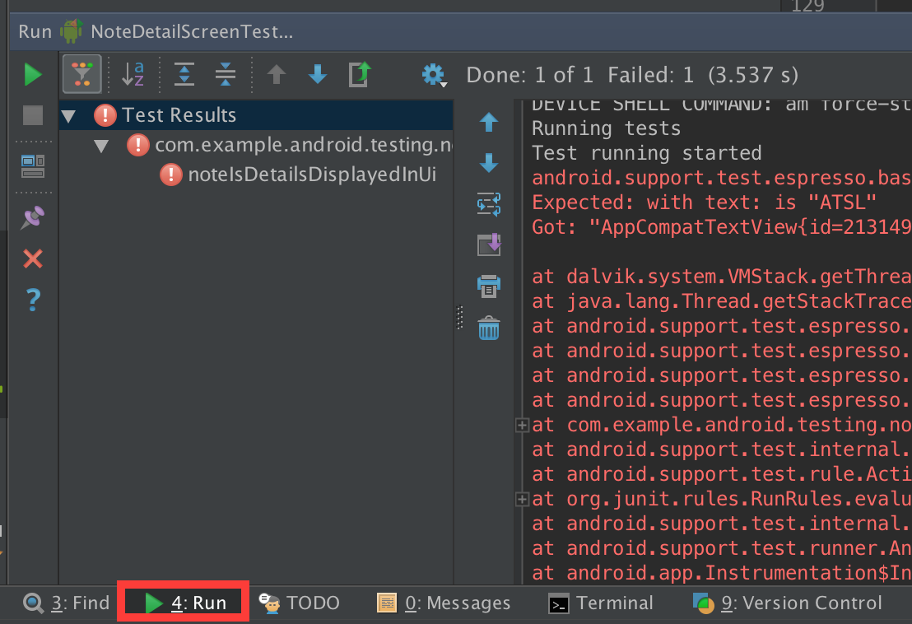
The test will fail with an error similar to this:
android.support.test.espresso.base.DefaultFailureHandler$AssertionFailedWithCauseError: 'with text: is "ATSL"' doesn't match the selected view.
Expected: with text: is "ATSL"
Got: "AppCompatTextView{id=2131492979, res-name=note_detail_title, visibility=VISIBLE, width=0, height=103, has-focus=false, has-focusable=fals
<... stacktrace ...>
This error tells us that the title TextView does not contain the expected text we have set on it.
We haven't implemented the hooks for the NoteDetailContract.View yet which handles the display of note details.
Edit the file app/src/main/java/.../noteDetail/NoteDetailFragment.java to add the missing logic:
Implement the methods: setProgressIndicator, hideDescription, hideTitle, showDescription and showTitle:
@Override
public void setProgressIndicator(boolean active) {
if (active) {
mDetailTitle.setText("");
mDetailDescription.setText(getString(R.string.loading));
}
}
@Override
public void hideDescription() {
mDetailDescription.setVisibility(View.GONE);
}
@Override
public void hideTitle() {
mDetailTitle.setVisibility(View.GONE);
}
@Override
public void showDescription(String description) {
mDetailDescription.setVisibility(View.VISIBLE);
mDetailDescription.setText(description);
}
@Override
public void showTitle(String title) {
mDetailTitle.setVisibility(View.VISIBLE);
mDetailTitle.setText(title);
}Run the test again (NoteDetailScreenTest) - the test noteDetails_DisplayedInUi now passes:
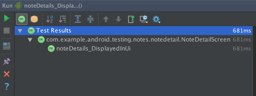
A common error while running your tests in this codelab setup is:
If you run into this error uninstall all artifacts from your test device using Android studio. Open the Gradle view on the right hand side of Android studio. Open :app > Tasks > install and run the uninstallAll task by double clicking it.
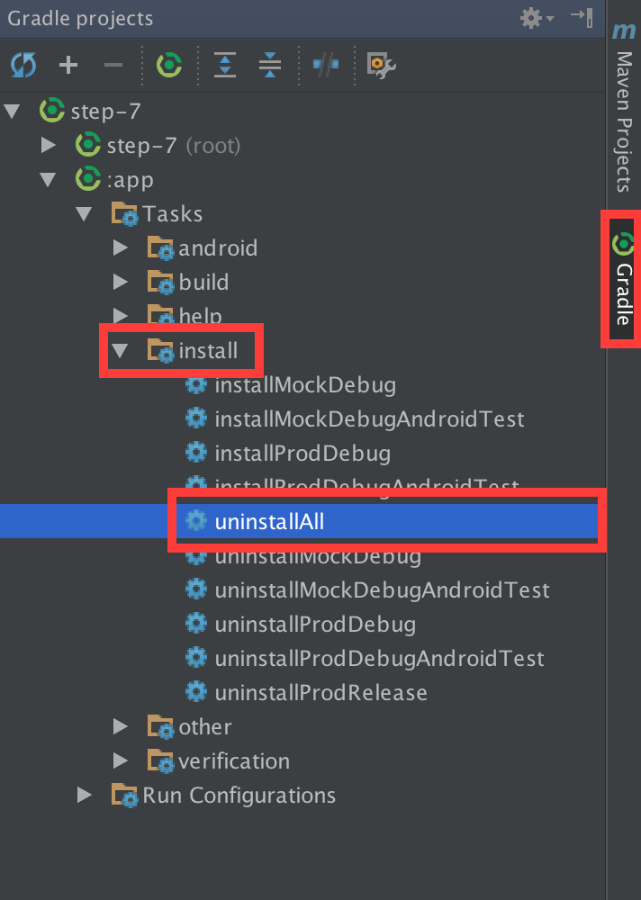
Continue with your existing Android Studio project for this section.
Espresso-Intents is an extension to Espresso that focuses on the validation and mocking of Intents. It has a similar API to Mockito (that we have explored earlier for mocking Java code), but for stubbing Intents.
If your app takes advantage of the full power of the Android platform by intenting out to other applications or the platform, you can focus on your own functionality and rely on the platform and other apps to function as expected. With Espresso-Intents you can validate your Intents or even stub out Intents by responding with your own results.
Espresso-Intents adds the functionality to intercept Intents based on some matching criteria. These matchers are defined via Hamcrest Matchers (that we briefly explored earlier in the mocking section), but usually the basic built-in matchers provide sufficient functionality: you can match based on action, data, extras and categories or any combination thereof.
Espresso-Intents also adds functionality to provide stub implementations to matching intents, by intercepting Intents and providing a response for Activities that are started with startActivityForResult(...)
Clicking on the "Add image" button on the "Add Note" screen sends an Intent to the camera application on the device to take a photo. The image is then returned back to the app.
We will write a test that verifies that after a photo is taken from that screen, its thumbnail is displayed in our app.
Make sure to select the the mockDebug build variant:
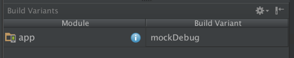
Edit the file app/src/androidTestMock/java/.../addnote/AddNoteScreenTest.java and comment in the following lines as you work through this section:
First we have already set up an IntentsTestRule. It is an extension of ActivityTestRule that we have used earlier and specifically built for using the Espresso-Intents API in functional UI tests. It initialises Espresso-Intents
before each @Test and releases it after each run.
@Rule
public IntentsTestRule<NotesActivity> mNotesIntentsTestRule = new IntentsTestRule<>(NotesActivity.class);Next, we will implement the test addImageToNote_ShowsThumbnailUi().
Remove the call to fail(...).
@Test
public void addImageToNote_ShowsThumbnailInUi() {
...
}We will stub out all Intents that match the MediaStore.ACTION_IMAGE_CAPTURE action and always respond with a valid (RESULT_OK) ActivityResult (provided by a call to createImageCaptureActivityResultStub() ).
First we will create the result object:
ActivityResult result = createImageCaptureActivityResultStub();Next we instruct Espresso to respond to all intents that have the MediaStore.ACTION_IMAGE_CAPTURE action with the result object we have just created:
intending(hasAction(MediaStore.ACTION_IMAGE_CAPTURE)).respondWith(result);Next we verify that no thumbnail image is being shown as a sanity check - no image has been taken yet.
// Check thumbnail view is not displayed
onView(withId(R.id.add_note_image_thumbnail)).check(matches(not(isDisplayed())));
selectTakeImageFromMenu();
We select the "Add image" option in the menu using a short helper method:
selectTakeImageFromMenu();selectTakeImageFromMenu() clicks the "Add image" button that fires off a MediaStore.ACTION_IMAGE_CAPTURE Intent. (If you are curious, we are using a convenience method called openActionBarOverflowOrOptionsMenu(...) from Espresso to open the menu.)
If the Intent was set up correctly, it will be captured by our test and a valid result will be returned. If the Intent does not match our expected value, it will not be matched and an assertion exception would be thrown.
Finally we check that the thumbnail is now being displayed:
onView(withId(R.id.add_note_image_thumbnail))
.check(matches(allOf(
hasDrawable(),
isDisplayed())));This is our final addImageToNote_ShowsThumbnailInUi() test:
@Test
public void addImageToNote_ShowsThumbnailInUi() {
// Create an Activity Result which can be used to stub the camera Intent
ActivityResult result = createImageCaptureActivityResultStub();
// If there is an Intent with ACTION_IMAGE_CAPTURE, intercept the Intent and respond with
// a stubbed result.
intending(hasAction(MediaStore.ACTION_IMAGE_CAPTURE)).respondWith(result);
// Check thumbnail view is not displayed
onView(withId(R.id.add_note_image_thumbnail)).check(matches(not(isDisplayed())));
selectTakeImageFromMenu();
// Check that the stubbed thumbnail is displayed in the UI
onView(withId(R.id.add_note_image_thumbnail))
.perform(scrollTo()) // Scroll to thumbnail
.check(matches(allOf(
hasDrawable(), // Check ImageView has a drawable set with a custom matcher
isDisplayed())));
}Run the test!
It should pass:
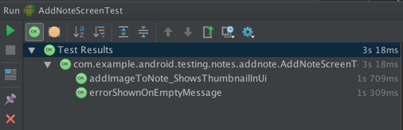
By using the full power of the Android platform (and being a good app citizen), you can write tests that focus on your own functionality, without having to worry about functionality of the platform.
Continue with your existing Android Studio project for this section.
Espresso-contrib is an extension to the Espresso framework that contains a few additional, useful features that will help you write great tests with Espresso. Part of this component is support for RecyclerView that enables you to write ViewMatchers
for items or perform specific RecyclerViewActions (such as
scrolling to a specific item). It also contains explicit support for the navigation drawer through DrawerActions and DrawerMatchers.
Let's use some of these features of Espresso-contrib to write a test that verifies that opening the navigation drawer and selecting the ‘Statistics' option opens that screen and hides the drawer when selected.
This test is using the main implementation and does not rely on the mock target. Switch the build variant to prodDebug:
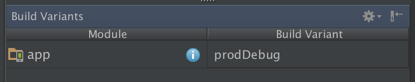
Edit the file app/src/androidTest/java/.../notes/AppNavigationTest.java and comment in the following lines as you work through this section:
Let's add a new test called AppNavigationTest.
Make sure it is setup to run with the JUnit4 runner and is defined as a large test:
@RunWith(AndroidJUnit4.class)
@LargeTest
public class AppNavigationTest {
...
}Let's write a small test that verifies that clicking the ‘Home' icon on the start screen opens the navigation drawer.
Implement AppNavigationTest#clickOnAndroidHomeIcon_OpensNavigation(), which:
isClosed() matcher) isOpen(...) matcher.@Test
public void clickOnAndroidHomeIcon_OpensNavigation() {
// Check that left drawer is closed at startup
onView(withId(R.id.drawer_layout))
.check(matches(isClosed(Gravity.LEFT))); // Left Drawer should be closed.
// Open Drawer
onView(withContentDescription("Navigate up")).perform(click());
// Check if drawer is open
onView(withId(R.id.drawer_layout))
.check(matches(isOpen(Gravity.LEFT))); // Left drawer is open open.
}Run the test - clickOnAndroidHomeIcon_OpensNavigation should complete successfully:
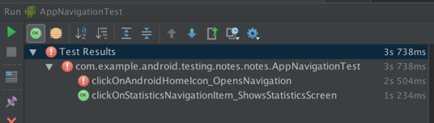
Next, implement our test called clickOnStatisticsNavigationItem_ShowsStatisticsScreen() in the file using the drawer support from Espresso-contrib.
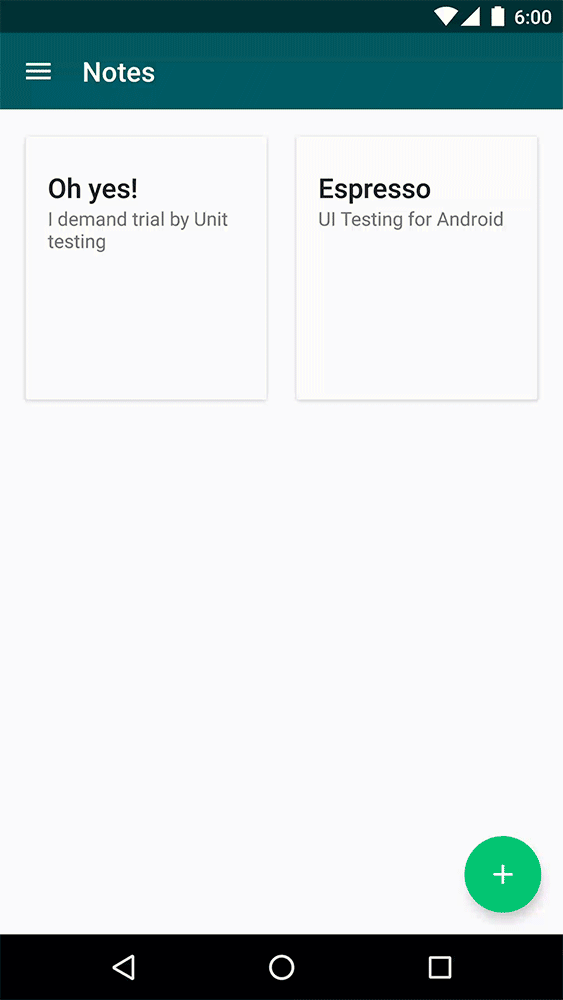
Edit the file app/src/androidTest/java/.../notes/AppNavigationTest.java and comment in the following lines as you work through this section:
We will be using a custom ViewAction that we have implemented for you: navigateTo(...). It provides an easy interface to match MenuItems in a NavigationView. Here we will be using it for
the navigation drawer to find a specific item that we want to select. You can find its implementation in app/src/androidTest/.../action/NavigationViewActions.java if you want to find out how it works exactly.
isClosed() matcher) and trigger its open(...) action to open the drawer.navigateTo(...) matcher on the DrawerLayout to find the statistics item by its ID.Context from the InstrumentationRegistry) and checking that the shown TextView displays the correct text.@Test
public void clickOnStatisticsNavigationItem_ShowsStatisticsScreen() {
// Open Drawer to click on navigation.
onView(withId(R.id.drawer_layout))
.check(matches(isClosed(Gravity.LEFT))) // Left Drawer should be closed.
.perform(open()); // Open Drawer
// Start statistics screen.
onView(withId(R.id.nav_view))
.perform(navigateTo(R.id.statistics_navigation_menu_item));
// Check that statistics Activity was opened.
String expectedNoStatisticsText = InstrumentationRegistry.getTargetContext()
.getString(R.string.no_statistics_available);
onView(withId(R.id.no_statistics)).check(matches(withText(expectedNoStatisticsText)));
}One of the key parts of Espresso is its ability to synchronize all test actions. Espresso waits until the UI is idle before it moves to the next operation. Likewise, it waits for AsyncTask background operations to complete. In general, this should address the majority of test synchronizations in your application. If you have written UI tests before, you will appreciate this feature - there's no need to add waits or synchronization points to your app!
However, sometimes it is not possible to rely on automatic synchronisation, for instance when your app does background operations via non-standard means (managing threads directly or using custom Services). If you have run into a situation where you cannot rely on Espresso to automatically handle the synchronization for you, you can use idling resources and still rely on Espresso for synchronization.
As you use a resource that needs to be synchronized, register it with Espresso using Espresso.registerIdlingResource in your test set up (usually in your @Before method), and implement the IdlingResource interface to track their use.
In our app we have wrapped the calls to SimpleCountingIdlingResource (which is a simple implementation of the
IdlingResource interface) in the class EspressoIdlingResource that is used across the entire application. This makes it easy to use the idling resources across the entire app.
You can see it in action in the NotesPresenter, where we
increment the counter just before we make an asynchronous call to access the notes api to load in a list of notes. This signals to Espresso that the app is busy and holds all further execution of Espresso commands until the app is marked
as idle again after the callback returns:
@Override
public void loadNotes(boolean forceUpdate) {
mNotesView.setProgressIndicator(true);
if (forceUpdate) {
mNotesRepository.refreshData();
}
// The network request might be handled in a different thread so make sure Espresso knows
// that the app is busy until the response is handled.
EspressoIdlingResource.increment(); // App is busy until further notice
mNotesRepository.getNotes(new NotesRepository.LoadNotesCallback() {
@Override
public void onNotesLoaded(List<Note> notes) {
EspressoIdlingResource.decrement(); // Set app as idle.
mNotesView.setProgressIndicator(false);
if (notes.isEmpty()) {
mNotesView.showNotesEmptyPlaceholder();
} else {
mNotesView.showNotes(notes);
}
}
});
}
Code coverage describes how well your application is covered by tests. This can be useful to find areas of your app that aren't tested well enough (and could contain potential bugs).
Android studio has built-in support to generate code coverage reports from unit tests. We'll look at instrumentation tests in the next section. Note that these reports are independent of each other and are not merged.
Create a run configuration for the unit tests. In the test source set, under java, select the package name: com.example.android.testing.notes. Right click on the package name and select "Create tests in com.example.android.testing.notes".
(If you have previously created a test configuration, enable it by clicking on "Select tests in com.example..." In the next step, you need to edit the existing test configuration: Run > Edit configurations )
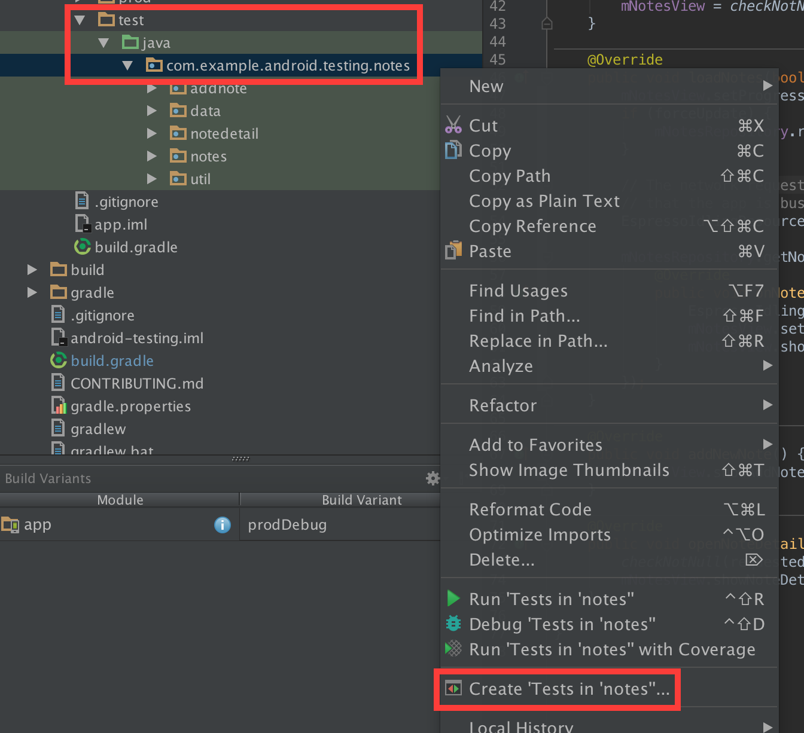
On the next dialog, select the "Code Coverage" tab.
Select the "IntelliJ IDEA" coverage runner. Accept the (empty) default setting for the "packages and classes to record coverage data". (You could go ahead and exclude the platform generated files (R.java and BuildConfig.java) by specifying the packages in the app specifically, but that's not required.)
Click OK to create the build configuration.
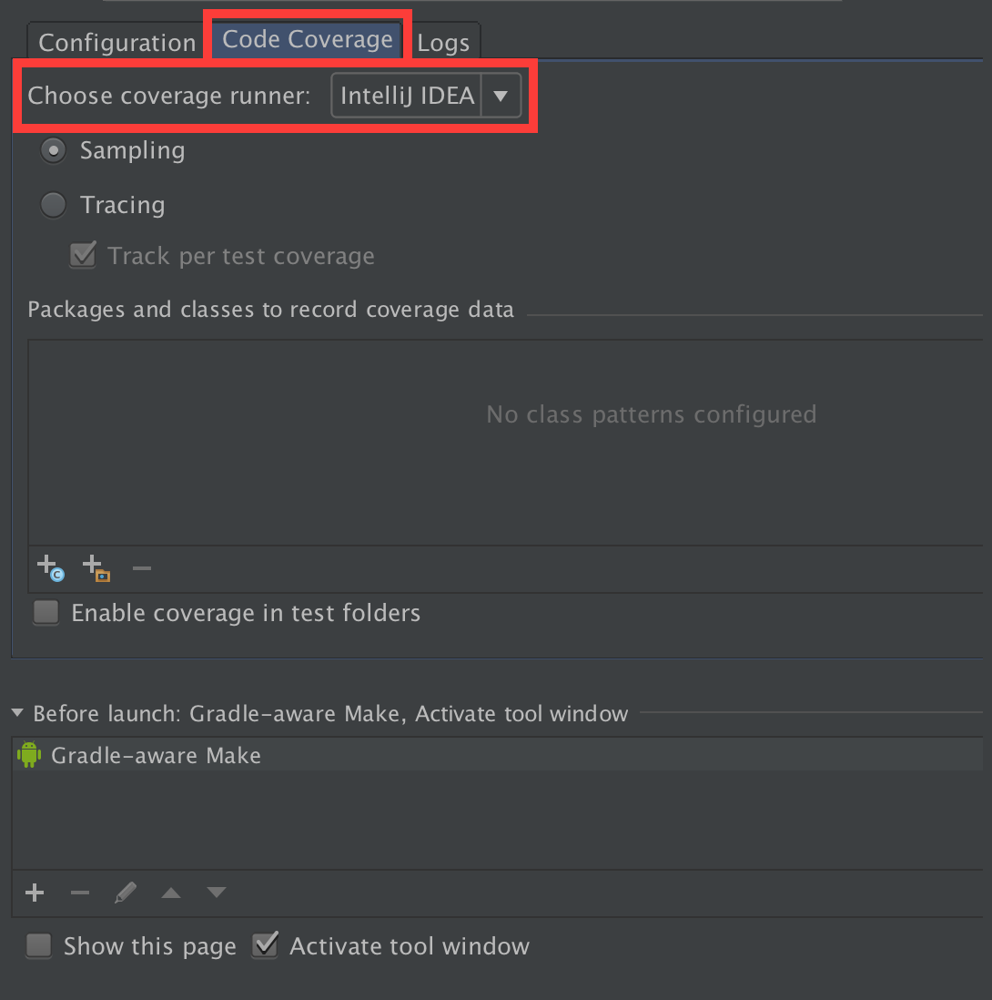
Next, run the code coverage report. In the build configuration, select the new build configuration we have just created, and click the code coverage button to generate the report.
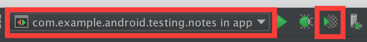
When the task finishes, the code coverage report will be displayed in a panel in the right hand side. (You may have to expand the panel by dragging on its side):
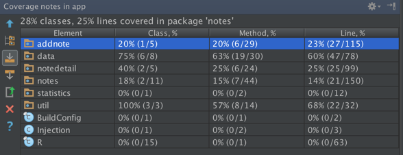
On this panel you can navigate through each feature (which is contained in its own package) and you can even drill down all the way to exact methods. For example, navigate to the notedetail package (com > example > android > testing > notes) to see code coverage for the notes detail feature. Clicking on a class opens the editor for that file - code coverage is displayed in red and green bars on the
left hand side:
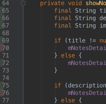
There is no support for showing code coverage reports for instrumentation tests in Android Studio.
First we need to update our gradle build configuration to enable code coverage reports for debug builds.
Open the file app/build.gradle and comment in the following line within the android section.
buildTypes {
debug {
// Run code coverage reports by default on debug builds.
testCoverageEnabled = true
}
}This enables a new gradle task that will generate a code coverage report for debug builds.
In Android Studio, sync your gradle configuration with your project ( in the toolbar) to see the new *CoverageReport gradle tasks.
Next, run the gradle task createMockDebugAndroidTestCoverageReport to generate the coverage report. You can run it from the Gradle Tasks perspective (on the right hand side of the screen in Android
Studio) double click on verification > createMockDebugAndroidTestCoverageReport:
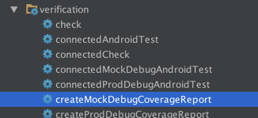
Or you can run it directly from the commandline:
./gradlew createMockDebugAndroidTestCoverageReportOnce the task is complete, you can find the coverage report in app/build/reports/coverage/mock/debug.
Open the file index.html in your web browser. (In Android Studio right click on the file index.html and select Open in Browser > Chrome).
The report will look similar to this:
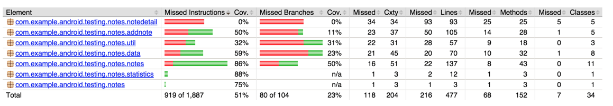
You can explore the coverage of individual packages and files by navigating through the elements.
Go to the NotePresenter class (under com.example.android.testing.notes.addnote > AddNotePresenter):
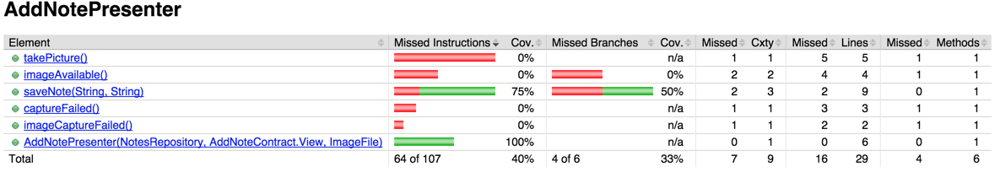
Click on a method to see a graphical representation of the parts of the code that are covered by our instrumentation tests:
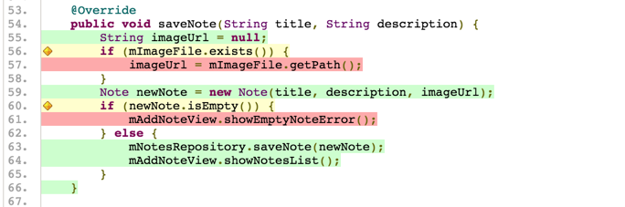
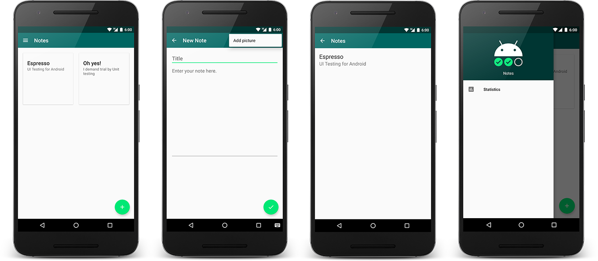
Congratulations!
You have now learned the basics of app architecture design using the MVP (Model-View-Presenter) pattern and explored the world of testing on Android!
In this codelab we have covered testing from a few different angles - from functional unit tests (with the help of Mockito to handle Android dependencies) to instrumental UI tests with Espresso. Developing an application from a test-driven point of view like we did here can help you define a clean architecture and establish clear communication between different components of your application.
Matchers,
ViewActions and ViewAssertions.